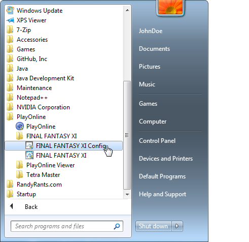
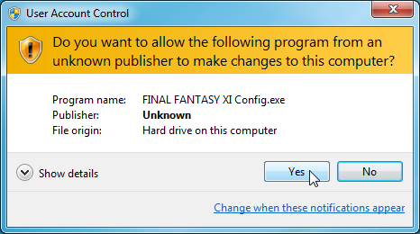
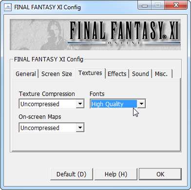
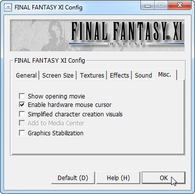
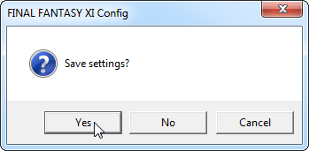

- 
Open the Start menu, then navigate to PlayOnline > FINAL FANTASY XI > FINAL FANTASY XI Config.
- 
When prompted to allow the file to make changes to your computer, click "Yes".
- 
On the "Textures" tab, I suggest setting both "Texture Compression" and "On-screen Maps" to "Uncompressed", and "Fonts" to "High Quality".
- 
On the "Misc" tab, I suggest un-checking "Show opening movie", and checking "Enable hardware mouse cursor". Click "OK".
- 
Click "Yes" to save the settings.